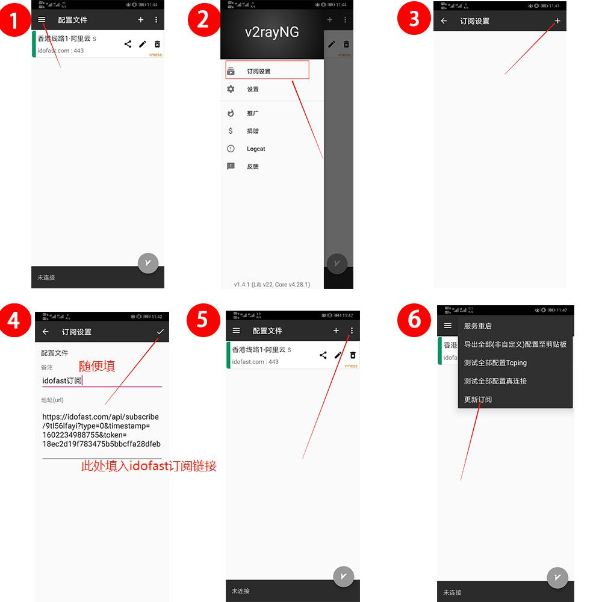
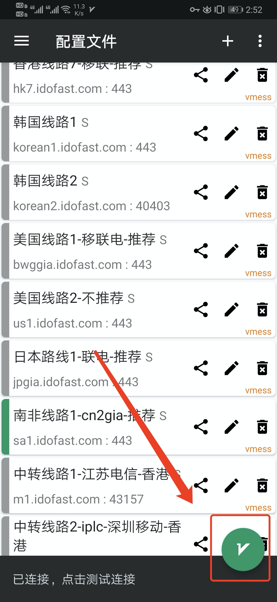

Android使用教程
请在浏览器打开该页面，不要直接用微信自带的浏览器打开，这样能避免许多问题
第一步安装v2rayNG
点击此处下载v2rayNG安装包下载之后安装即可
第二步，导入服务器节点
请按照下面图片内容指示进行操作
订阅地址请登陆自己的账号后台获取，在我的账号这一栏中有个订阅地址，点击复制便可把内容复制到剪切板里

最后一步，启动
更新订阅后，会多出来一些配置列表，随便选择一个，然后点击右下角的按钮，便可开启代理，再次点击关闭代理
此时已经启动成功，可以拿谷歌测试一下是否可以正常访问国外网站www.google.com